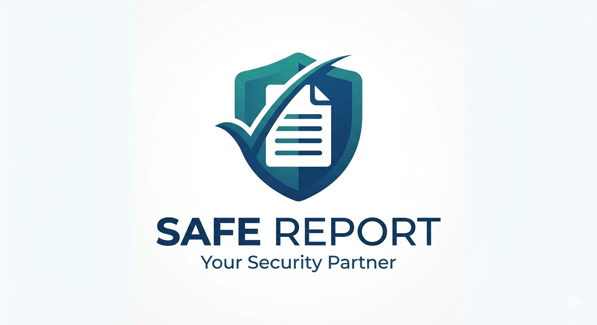

SafeReport

"Dignified support for everyone, everywhere. We have built a bridge between vulnerable voices
and organizations that can help, removing fear and saving time so that help is always just a few clicks away."
Importance of SafeReport
-
Removing Fear and Embarrassment
The system allows vulnerable people to report their problems privately from home without facing anyone.
This removes the emotional barrier that kept many people silent for a long time.
-
Saving Time
Instead of spending a full day traveling and waiting at offices, people can submit their report
in less than 3 minutes from any phone. This is especially important for people who cannot afford to lose a working day.
-
Equal Access to Help
The system gives everyone equal opportunity to access support regardless of their physical condition,
location, or social status. Even elderly people, disabled persons, and those in remote areas can reach help easily.
-
Protecting Human Dignity
Vulnerable people no longer have to expose their struggles publicly. The anonymous option ensures
that getting help does not come at the cost of dignity or reputation in the community.
-
Faster Responses to Real Needs
Because reports are organized by category and urgency, support organizations can prioritize
emergency cases and respond faster than the traditional walk-in system allows.
-
Creating a Record of Community Problems
The system builds a database of real problems happening in the community. This helps leaders
and NGOs understand which problems are most common and plan better solutions.
-
Empowering Vulnerable Groups
Instead of depending entirely on others, vulnerable people take their own step to seek help.
This builds confidence and a sense of control over their own situation.
-
Strengthening Community Support Systems
By connecting vulnerable people directly to NGOs, health workers, legal aid, and community leaders,
the system strengthens the whole support ecosystem and makes it more effective.
-
Reducing Cases That Go Unnoticed
Many people suffered in silence and their problems were never reported. This system ensures
that no one is left behind simply because they were too afraid or too tired to seek help in person.
-
Supporting Government and NGOs in Decision-Making
The data collected helps authorities and organizations make evidence-based decisions about
where to direct resources and which communities need the most support.